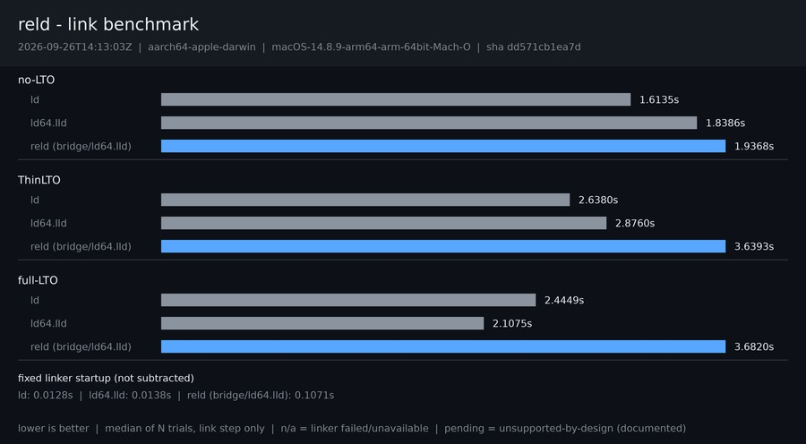

Generated 2026-09-26 14:13:23 UTC. Each chart links the same workload; per-OS detail is one click away.
Linux detail, latest.json and history.jsonl
Windows detail, latest.json and history.jsonl

macOS detail, latest.json and history.jsonl
zackees/reld